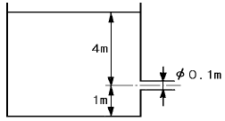
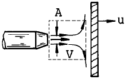
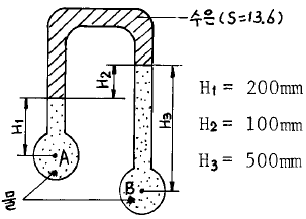
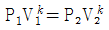
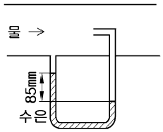
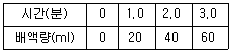

소방설비산업기사(기계) (2003-08-31 기출문제)
1과목: 소방원론
1. 방재센타에 대한 설명중 옳지 않은 것은?
- 피난인원의 유도를 위하여 피난층으로부터 가능한한 높은 위치에 설치한다.
- 연소위험이 없도록 하고 충분한 면적을 갖도록 한다.
- 자동화재탐지설비의 수신기에는 경계구역 부근에 대한 소방설비 등의 위치를 명시한다.
- 소화설비 등의 기동에 대하여 감시제어기능을 갖추어야 한다.
(정답률: 84%)

2. 가연성 기체 또는 액체의 연소범위에 대한 설명이 잘못된것은?
- 하한이 낮을수록 발화위험이 높다.
- 연소범위가 넓을수록 발화위험이 크다.
- 상한이 높을수록 발화위험이 적다.
- 연소범위는 주위온도에 관계가 깊다.
(정답률: 65%)
3. 건축물의 구조상 주요 구조부가 아닌 것은?
- 기초
- 지붕
- 벽
- 기둥
(정답률: 77%)
4. 증기압에 대한 설명과 관계가 없는 것은?
- 증기분자의 질량이 클수록 큰 증기압이 나타난다.
- 분자의 운동이 커지면 증기압이 증가한다.
- 액체의 온도가 상승하면 증기압이 증가한다.
- 증발과 응축이 평형상태일 때의 압력을 포화증기압이라한다.
(정답률: 37%)
5. 내화구조가 아닌 것은?
- 철골트러스
- 연와조
- 철근콘크리트조
- 석조
(정답률: 28%)
6. 화재의 원인중 인위적 발생 요인이 아닌 것은?
- 화기 취급 부주의로 인한 발화
- 가연물 취급 부주의로 인한 발화
- 기계, 기구의 마찰로 인한 발화
- 개발을 하기 위한 방화
(정답률: 67%)
7. 소화약제로 사용하는 CO2 에 대한 설명중 옳은 것은?
- 미소량의 수분을 포함할 수 있다.
- 화염과 접촉하여 유독물질을 생성시킨다.
- A,B,C,D급 화재의 진화에 쓰인다.
- 불안정한 물질이지만 소화효과는 좋다.
(정답률: 37%)
8. 화재를 발생시키는 열원으로 기계적 원인으로 볼 수 있는 것은?
- 저항렬
- 압축열
- 분해열
- 자연발열
(정답률: 87%)
9. “하나의 물체가 다른 물체와 직접 접촉하여 전달되는 과정을 말하며 이것은 일정 시간내에 전달되는 열량은 고온부와 저온부의 온도차에 비례하여 열전도도, 길이 및 두께에 따라 다르다” 이것은 무엇을 설명한 것인가?
- 대류
- 복사
- 전도
- 열전달
(정답률: 알수없음)
10. 급격한 화학반응에 의하여 본래의 물질이 고온, 고압의 기체로 격렬한 팽창에 의하여 생기는 현상을 폭발이라 할수 있으며 폭발은 크게 4가지 변화의 결과에 의하여 발생한다. 이에 해당되지 않은 것은?
- 화학적변화
- 기계적변화
- 열적변화
- 전기적변화
(정답률: 47%)
11. 내화건축물의 화재성상인 후래시 오버(flash-over)현상과 관계가 없는 것은?
- 실내온도가 800∼900℃ 에 도달한다.
- 바닥부분에 모인 가연성기체가 폭발적으로 연소한다.
- 화재발생 후 약 5∼6분경에 발생한다.
- 성장기와 최성기사이에서 발생한다.
(정답률: 알수없음)
12. 건물 내부에 화재가 발생하여 혈액 중의 산소운반 물질인 헤모글로빈과 결합하여 카르복시 헤모글로빈이 발생하므로써 산소의 혈중 농도를 저하시켜서 질식을 가져오거나 근육의 활동을 정지시킬 수 있는 유해성분은?
- CO
- CO2
- H2
- H2O
(정답률: 100%)
13. 할론 1301(CF3Br) 소화약제를 사용하여 소화할 때 연소열에 의하여 생긴 열분해 생성가스가 아닌 것은?
- HF
- HBr
- Br2
- CO2
(정답률: 알수없음)
14. 내장재료에 관한 설명으로 틀린 것은?
- 불연재료는 불에 타지 아니하는 것으로 난연 1급에 해당한다.
- 석재, 벽돌, 유리, 시멘트 모르타르 및 기타 이와 유사한 것은 불연재료이다.
- 난연재료는 난연 2급에 해당한다.
- 특별피난계단의 부속실은 그 실내에 접하는 부분의 마감을 불연재료로 하여야 한다.
(정답률: 50%)
15. 고체 가연물이 연소할 때 나타나는 연소현상에 해당하는 것은?
- 표면연소
- 심부연소
- 발염연소
- 불꽃연소
(정답률: 70%)
16. 화재의 3요소가 아닌 것은?
- 점화원
- 공기
- 연료
- 연쇄반응
(정답률: 78%)
17. 산화성 고체와 관계가 없는 것은?
- 과염소산
- 질산염류
- 아염소산염류
- 무기과산화물류
(정답률: 47%)
18. 다음 설명중 틀린 것은?
- 접지공사의 시행은 전기단락사고의 예방대책이라고 할 수 없다.
- 유증기 또는 먼지 등이 발생할 우려가 있는 장소에는 방폭형의 전기기기를 사용한다.
- 과전류에 의한 발화를 방지하기 위한 조치로 퓨즈나 전선의 접속을 완전하게 하여야 한다.
- 누전사고를 방지하기 위한 대책으로, 전선을 움직이는 물체와 접촉되지 않도록 하는 것과는 별개의 사항이다.
(정답률: 36%)
19. 가연성 증기를 발생하는 액체 또는 고체와 공기의 계에 있어서,기체상 부분에 다른 불꽃이 닿았을 때 연소가 일어나는데 필요한 액체 또는 고체의 최저온도는?
- 발화점(ignition point)
- 인화점(flash point)
- 연소점(fire point)
- 산화점(oxidation point)
(정답률: 50%)
20. 수소 같은 가연성 가스가 공기 중에서 산소와 혼합하면서 발염 연소하는 현상을 무엇이라 하는가?
- 분해연소
- 확산연소
- 혼합연소
- 증발연소
(정답률: 알수없음)
2과목: 소방유체역학
21. 레이놀즈수는 어느 것과 관계 있는가?
- 중력대 관성력
- 관성력대 점성력
- 점성력대 중력
- 점성력대 탄성력
(정답률: 71%)
22. 다음과 같은 조건일 때 배연기의 축동력은? (단, 송풍기의 풍량은 Q=750 m3/min, 전압은 Pt=60mmAq, 효율은 55%, 전달계수는 1.15 로 한다.)
- 13.36 kW
- 14.7 kW
- 15.37 kW
- 922.45 kW
(정답률: 40%)
23. 대기압이 작용하는 수면으로 부터 H 깊이에 설치된 오리피스를 통하여 유출되는 물의 속도수두는? (단, 속도계수는 Cv라 한다.)
- Cv/H
- CvH
- Cv2H
- Cv2/H
(정답률: 58%)
24. 베르누이 방정식에 적용되는 가정과 관계가 없는 것은?
- 비점성유체
- 정상류
- 유선을 따라 운동
- 압축성유체
(정답률: 9%)
25. 이상유체를 설명한 것중 옳은 것은?
- 과열유체
- 압축성 유체
- 점성유체
- 비압축성 유체
(정답률: 알수없음)
26. 그림과 같은 수조에 부착된 원형 노즐(Nozzle)에서 분출되는 유량은 약 몇 m3/s 인가? (단, 손실은 무시한다.)

- 0.04 m3/s
- 0.07 m3/s
- 0.14 m3/s
- 0.16 m3/s
(정답률: 34%)
27. 다음 중 달톤(Dalton)의 법칙을 가장 올바르게 나타낸 항은?
- 1 kmol의 가스는 동일온도, 동일압력하에서는 동일한 체적을 갖는다.
- 가스의 절대온도가 일정하면 비체적은 압력에 반비례한다.
- 혼합가스의 전압력은 각 가스의 분압의 합과 같다.
- 가스의 압력이 일정하면 비체적은 절대 온도에 비례한다.
(정답률: 13%)
28. 이산화탄소의 상태도에 있어서 삼중점의 온도는 몇 도 정도인가?
- 31℃
- 60℃
- 0℃
- -56℃
(정답률: 17%)
29. 그림과 같이 고정된 노즐로 부터 밀도가 ρ 인 액체의 제트가 속도 V로 분출하여 평판에 충돌하고 있다. 이때 제트의 단면적이 A이고 평판이 u인 속도로 제트와 같은 방향으로 운동할 때 평판에 작용하는 힘 F는 ?

- F = ρ A(V+u)
- F = ρ A(V+u)2
- F = ρ A(V-u)
- F = ρ A(V-u)2
(정답률: 27%)
30. 다음 소화약제중 ABC급 화재에 모두 적용 가능한 약제는?
- KHCO3
- NH4H2PO4
- NaHCO3
- CO(NH2)2 + KHCO3
(정답률: 70%)
31. 그림에서 A점의 압력 PA와 B점의 압력 PB와의 압력차 (PA - PB)는?

- 9.4 kPa
- 10.4 kPa
- 11.4 kPa
- 12.4 kPa
(정답률: 55%)
32. 직접적인 유량 측정장치로 볼 수 없는 항목은?
- 로타미터 (rotameter)
- 벤튜리미터 (Venturi meter)
- 오리피스 (Orifice)
- 부르돈관 (Bourdon tube)
(정답률: 46%)
33. 이상기체가 정적과정에 의해 상태변화를 할 때 두 상태의 관계를 올바르게 표현한 것은?
- P1v1=P2v2
- T1/v2=T2/v2
- T1/P1=T2/P2

(정답률: 46%)
34. 다음 중 레이놀즈수가 아닌 것은 ? (단, V는 속도, L은 길이, D는 지름, ρ는 밀도, γ는 비중량, μ는 점성계수, ν는 동점성 계수, g는 중력가속도를 표시한다.)
- ρVD/μ
- VD/ν
- γVD/gμ
- VD/μ
(정답률: 42%)
35. 표준 대기압에서 80℃의 물을 펌프로 끌어올릴 수 있는 최대 높이는 약 몇 m 인가? (단, 손실은 무시하고 80℃에서 물의 증기압은 47.3 kPa 이라고 가정한다.)
- 4.6
- 5.5
- 5.66
- 6.8
(정답률: 34%)
36. 소화약제의 취급, 시험 및 관리에 대한 설명 중 틀린 것은?
- 기계포 소화약제의 보관온도는 10∼35℃ 정도가 적당하다.
- 분말소화약제는 저장 중 수분에 의한 응고를 막기 위해 실리콘을 첨가한다.
- 포 원액 저장탱크는 직사광선이 쬐는 곳을 피해 설치하는 것이 바람직하다.
- 이산화탄소 저장용기는 소화효과를 높일 수 있도록 방호구역내에 설치해야 한다.
(정답률: 알수없음)
37. 실제기체가 이상기체의 방정식을 근사적으로 거이 만족시키는 경우인 것은?
- 압력과 온도가 높을 때
- 온도가 높고 압력이 낮을 때
- 온도가 낮고 압력이 높을 때
- 압력과 온도가 낮을 때
(정답률: 알수없음)
38. 반지름 3 cm, 길이 15 m, 관마찰계수 0.025인 수평원관속을 물이 난류로 흐를 때 관 출구와 입구의 압력차가 9810 Pa 이면 유량은?
- 5.0 m3/s
- 5.0 L/s
- 5.0 cm3/s
- 0.5 L/s
(정답률: 39%)
39. 할로겐화합물 대체소화약제(청정소화약제)의 평가에 대한 설명 중 잘못된 것은?
- ODP(오존 파괴지수)는 작든지 O 이어야한다.
- GWP(지구 온난화지수)는 작으면 환경요소는 향상된다
- NOAEL(심장에 영향을 주는 농도)는 소화농도보다 작아야 한다.
- 안정하여 저장시 분해되지 말아야 한다.
(정답률: 34%)
40. 물이 흐르는 배관 내에 피토(pitot)관을 수은이 든 U자관에 연결하여 전압과 정압을 측정하였더니 85 mm의 액면차가 생겼다. 피토관 위치에 있어서 유속은 몇 m/s 인가? (단, 수은의 비중은 13.6 이다.)

- 2.34
- 3.14
- 4.31
- 4.58
(정답률: 30%)
3과목: 소방관계법규
41. 공동방화관리를 하여야 할 소방대상물로서 고층건축물은?
- 지하층을 제외한 층수가 10층이상인 것
- 지하층을 포함한 층수가 10층이상인 것
- 지하층을 제외한 층수가 11층이상인 것
- 지하층을 포함한 층수가 11층이상인 것
(정답률: 82%)
42. 화재의 원인과 피해의 조사에 관한 시점으로 옳은 것은?
- 화재가 진압된 후에 시작한다.
- 소화활동과 동시에 시작한다.
- 화재의 불씨가 조금 남아 출입이 가능할 때 시작한다.
- 소화액 또는 물 등이 건조되었을 때 시작한다.
(정답률: 알수없음)
43. 지정수량이상의 위험물을 관할 소방본부장 또는 소방서장에게 신고하고 임시로 저장 또는 취급하는 경우의 기간은 몇 일이내인가?
- 60
- 90
- 120
- 180
(정답률: 9%)
44. 소방력 기준등에서 소방관서의 배치기준과 소방관서가 화재의 예방.경계.진압과 구급.구조업무를 수행하는데 필요한 장비.인력등에 관한 소방력의 기준은 어디에서 정하는가?
- 소방본부
- 경찰서
- 행정자치부령
- 대통령령
(정답률: 알수없음)
45. 소방시설공사업자는 소방시설의 공사 및 정비를 함에 있어서 누구의 책임하에 시공ㆍ관리를 하여야하는가?
- 소방시설관리사
- 방화관리자
- 소방설비기사
- 소방공무원
(정답률: 38%)
46. 위험물 제조소 등에 설치하는 표지 및 게시판에 관한 규격으로서 적합하지 않은 것은?
- 표지의 규격은 가로 0.6m, 세로 0.3m 이상의 것이라야 한다.
- 표지의 바탕은 백색으로 하고 문자는 적색으로 할 것
- 표지에는 반드시 위험물 제조소라는 뜻을 표시할 것
- 게시판의 바탕은 백색, 문자는 흑색으로 할 것
(정답률: 47%)
47. 석유판매취급소에 설치할 수 있는 저장시설에 해당되는 것은?
- 옥내저장소 및 옥외탱크저장소
- 옥외탱크저장소 및 간이탱크저장소
- 간이탱크저장소 및 옥내저장소
- 옥내탱크저장소 및 지하탱크저장소
(정답률: 알수없음)
48. 감독상 필요한 경우에 소방용 기계.기구등의 형식승인, 검정 또는 성능시험을 받은 사람에 대하여 필요한 보고 또는 자료의 제출을 명할 수 있는 사람은?
- 소방서장
- 시.도지사
- 소방본부장
- 행정자치부장관
(정답률: 알수없음)
49. 주차용건축물로서 물분무등소화설비를 설치하여야 할 소방대상물은 연면적 몇 m2 이상인 것인가?
- 200
- 400
- 600
- 800
(정답률: 22%)
50. 소방용수시설로 이용되는 소화수조 및 저수조의 저수량은 도시계획법에 의한 상업지역 및 공업지역에 있어서는 몇 m3 이상이어야 하는가?
- 50
- 100
- 150
- 200
(정답률: 54%)
51. 과태료의 부과대상이 아닌 경우는?
- 행정기관이나 관계인에게 화재를 허위로 알린 경우
- 방화관리자의 선임과 해임신고를 게을리 한 경우
- 소방검사를 거부, 방해 또는 기피한 경우
- 소방용수, 소화기구 그밖의 소방상 필요한 설비의 설치명령을 위반한 경우
(정답률: 25%)
52. 건축물, 차량, 선박, 선거, 산림 그 밖의 공작물 또는 물건을 무엇이라 하는가?
- 소방대상물
- 소방시설
- 소방설비
- 소방장치
(정답률: 86%)
53. 가연성고체에 해당되는 위험물은?
- 칼륨
- 나트륨
- 마그네슘
- 알킬리튬
(정답률: 47%)
54. 소방시설관리사 자격의 결격사유가 아닌것은?
- 금치산 선고를 받은자
- 한정치산 선고를 받은자
- 파산자로 복권된자
- 형의 집행유예를 받고 그 기간중에 있는자
(정답률: 73%)
55. 위험물의 운반시 용기.적재방법 및 운반방법에 관하여는 화재 등의 위해예방과 응급조치상의 중요성을 감안하여 누가 정하는 중요기준 및 세부기준에 따라야 하는가?
- 소방서장
- 경찰서장
- 대통령령
- 행정자치부령
(정답률: 55%)
56. 옥외탱크저장소의 탱크는 틈이 없도록 제작되어야 하며, 강철판의 두께가 몇 mm 이상이어야 하는가?
- 2.5
- 2.8
- 3.2
- 4.0
(정답률: 17%)
57. 방염성능의 기준은 물품에 따라 버너의 불꽃을 제거한 때 부터 불꽃을 올리며 연소하는 상태가 그칠때까지의 시간이 몇초 이내로 정하여 고시하는가?
- 5
- 10
- 15
- 20
(정답률: 32%)
58. 1급방화관리자로 선임될 수 없는 사람은?
- 소방공무원으로서 5년이상 근무경력이 있는 사람
- 기계기사의 자격이 있는 사람으로 3년이상 방화관리에 관한 실무경력이 있는사람
- 산업안전기사의 자격이 있는 사람으로 2년이상 방화관리에 관한 실무경력이 있는사람
- 소방시설관리사.소방설비기사 또는 소방설비산업기사 자격을 가진사람
(정답률: 50%)
59. 소화활동 등에 관한 사항으로 옳지 않은 것은?
- 화재를 발견한 사람은 지체없이 소방서 등 또는 관계인에게 알려야 한다.
- 화재가 발생한 때에는 그 소방대상물의 관계자는 급히 대피하여 화재의 연소상태를 살펴야 한다.
- 소방대는 화재현장에 출동하기 위하여 긴급한 때에는 일반교통에 사용되지 않는 도로나 빈터 또는 물위를 통행할 수 있다.
- 소방자동차가 화재의 현장으로 출동할 때에는 모든 차와 사람은 통로를 양보하여야 한다.
(정답률: 65%)
60. 소방시설중 "소화활동설비"로만 구성된 것은?
- 제연설비, 비상콘센트설비
- 비상조명등, 연결송수관설비
- 옥외소화전설비, 무선통신보조설비
- 연결살수설비, 스프링클러설비
(정답률: 알수없음)
4과목: 소방기계시설의 구조 및 원리
61. 다음 사항 중 완강기에 표시하지 않아도 되는 사항은 어느 것인가?
- 종별, 형식
- 길이
- 무게
- 최대 사용자수
(정답률: 16%)
62. 백화점에 스프링클러 설비로서 각층에 폐쇄형 헤드를 150개씩 설치하였다. 수원의 용량은 얼마 이상 필요한가?
- 16m3
- 32m3
- 48m3
- 64m3
(정답률: 38%)
63. 포 소화설비에서 25% 환원시간을 알기 위하여 포시험량200g 체취하여 다음과 같은 배액량의 값을 얻었다. 25% 환원시간은 몇 분인가? (단, 1g은 1[ml]로 환산한다.)

- 1.25분
- 1.5분
- 2분
- 2.5분
(정답률: 27%)
64. 이산화탄소 소화설비에서 다음의 방호 대상물 중 가연성액체 또는 가연성 가스의 소화에 필요한 설계농도가 가장 높은 것은?
- 에틸 알콜
- 에탄
- 프로판
- 부타디엔
(정답률: 16%)
65. 할로겐화합물 소화설비의 특징으로 적당하지 않은 것은?
- 오존층을 보호하여 준다.
- 연소억제 작용이 크며, 소화능력이 크다.
- 금속에 대한 부식성이 적다.
- 변질, 분해등이 적다.
(정답률: 60%)
66. 수동식 소화기구는 각층마다 설치하되 소방대상물의 각 부분으로부터 1개의 수동식 소화기구까지의 거리로 맞는것은?
- 소형수동식 소화기 - 수평거리 20m이내
- 소형수동식 소화기 - 보행거리 30m이내
- 대형수동식 소화기 - 수평거리 20m이내
- 대형수동식 소화기 - 보행거리 30m이내
(정답률: 24%)
67. 주차장에 물분무소화설비를 설치한 경우 차량이 주차하는 바닥의 배수구를 향한 기울기로 올바른 것은?
- 50분의 1 이상
- 100분의 1 이상
- 150분의 1 이상
- 200분의 1 이상
(정답률: 25%)
68. 스프링클러 설비 배관 중 교차배관에서 분기되는 지점을 기점으로 한쪽 가지배관에서 스프링클러 헤드를 최대 몇 개(반자아래의 헤드갯수)까지 설치할 수 있는가?
- 6개
- 8개
- 10개
- 12개
(정답률: 알수없음)
69. 연결살수 설비에 있어 하나의 송수구역에 설치하는 개방형 살수헤드는 몇 개 이하이어야 하는가?
- 10개
- 20개
- 30개
- 40개
(정답률: 55%)
70. 특별피난계단 부속실의 과압방지장치로 플랩 밸브를 설치할 경우 날개의 면적은 얼마 이상으로 하여야 하는가? (단, 제연구역에 대한 보충량은 1,200 m3/h이다.)
- 0.06m2
- 0.07m2
- 0.08m2
- 0.09m2
(정답률: 60%)
71. 옥내 소화전 설비의 기동장치에 대해서 설명한 것중 가장 적합한 것은?
- 원격 조작식의 전원은 소화설비 전용 전원 이외에서 끄는 것이 좋다.
- 원격 조작식의 기동장치는 옥내 소화전의 누름단추를 누름으로서 가압 송수장치를 전기적으로 기동시키는 방식이다.
- 기동장치는 전화연락을 받은 수위실의 펌프 계원에 의해 기동시키는 것이다.
- 자동식의 기동장치는 건식의 옥내소화전 설비에만 사용되는 것이다.
(정답률: 85%)
72. 소화용수설비의 깊이가 지면에서 얼마 이상이면 가압송수장치를 설치하여야 하는가?
- 3.2m
- 4.5m
- 5.5m
- 10m
(정답률: 50%)
73. 다음은 옥내소화전 방수구에 대하여 설명한 것이다. 옳은 것은?
- 소방대상물의 각 부분으로부터 하나의 옥내 소화전방구구까지의 수평거리가 40m 이하일 것
- 바닥으로부터의 높이가 1.8m 이하일 것
- 방수구의 구경은 40mm이하일 것
- 소방대상물의 각 층마다 설치할 것
(정답률: 50%)
74. 연결 송수관 설비에서 가압송수장치를 설치하여야 하는 소방대상물의 높이는?
- 40m
- 55m
- 70m
- 100m
(정답률: 59%)
75. 차고 또는 주차장에 설치하는 분말 소화설비에 사용되는 소화약제는 어느 것인가?
- 제 3종 분말
- 제 2종 분말
- 제 1종 분말
- 제 4종 분말
(정답률: 57%)
76. 다음 중 옥외소화전설비에서의 설치기준이 맞는 것은?
- 수원의 저수량은 옥외소화전의 설치개수(2개 이상 설치된 경우에는 2개)에 7m3를 곱한 양 이상이 되도록 한다.
- 옥외소화전을 동시에 사용할 경우 각 소화전의 노즐선단에서 방수압력은 1.7kgf/cm2이다.
- 옥외소화전을 동시에 사용할 경우 각 소화전의 노즐선단에서 방수량은 250ℓ /min이다.
- 호스는 구경 50mm의 것으로 한다.
(정답률: 31%)
77. 포 소화설비의 자동기동장치에 사용되는 감지기와 폐쇄형스프링클러 헤드에 대한 내용 중 잘못된 것은?
- 감지기는 열 및 연기에 의하여 감지되는 것을 사용한다.
- 스프링클러 헤드는 표시온도가 79[℃] 미만인 것을 사용한다.
- 1개의 스프링클러 헤드의 경계면적은 20m2 이하로 한다.
- 스프링클러 헤드의 부착면 높이는 바닥으로 부터 5[m] 이하이어야 한다.
(정답률: 10%)
78. 스프링클러설비 형식 중 개방형 헤드를 사용하는 설비는?
- 습식
- 건식
- 일제 살수식
- 준비 작동식
(정답률: 54%)
79. 일반적인 산알카리 소화기의 약제방출 압력원에 대한 설명으로 옳은 것은?
- 산과 알카리의 화학반응에 의해 생성된 CO2의 압력이다.
- 소화기 내부의 압축 질소가스 압력이다.
- 소화기 내부의 이산화탄소 충전압력이다.
- 수동펌프를 주로 이용하고 있다.
(정답률: 알수없음)
80. Stack effect에 대한 설명 중 옳은 것은?
- 화재시 연기의 건물내부 이동에 큰 영향을 미친다.
- 일상의 건물 내부의 기류분포를 지배하는 요소는 아니다.
- 겨울철에 건물의 고층부에서는 옥외 공기가 개구부를 통해 유입된다.
- 공조 닥트 내부에 기체의 이동상태를 결정하는 주요 요소이다.
(정답률: 36%)